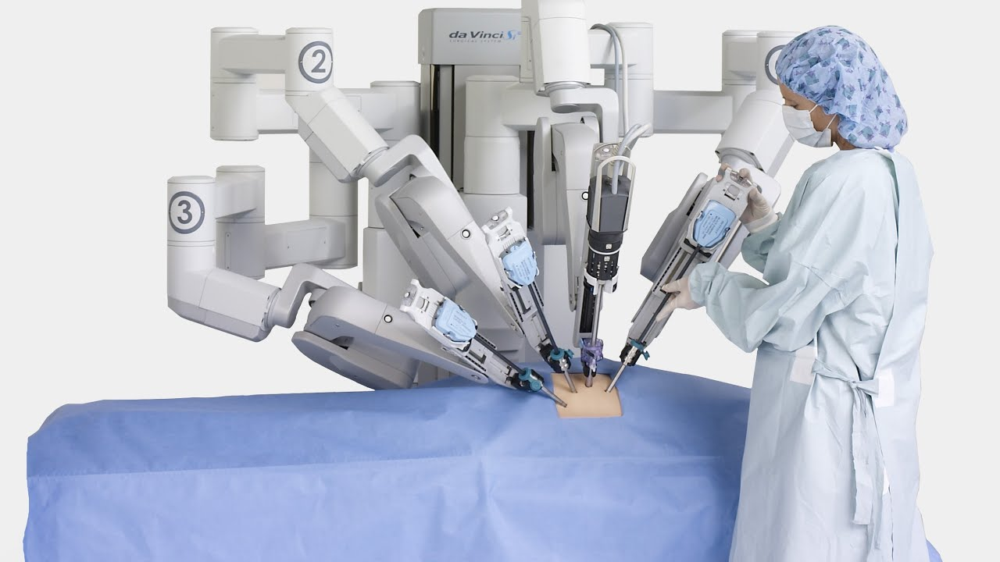

UD01: Caracterización de sistemas y utilización de modelos de Inteligencia Artificial¶
Modelos de Inteligencia Artificial¶
version: 2023-08-05¶
5. Campos de Aplicaciones de la Inteligencia Artificial¶
Visión por Computadora¶
- La visión artificial automatiza la extracción, el análisis, la clasificación y la comprensión de la información útil a partir de los datos de las imágenes. Los datos de la imagen adoptan muchas formas, como las siguientes:
- Imágenes individuales
- Secuencias de video
- Visualizaciones de varias cámaras
- Datos tridimensionales
Aplicaciones de Visión por Computadora¶
Vigilancia
- Entre las aplicaciones concretas de este tipo de sistemas, a parte de las obvias por parte de la policía o sistemas de seguridad de organizaciones, están:
- Vigilancia y control del tráfico en las ciudades.
- Cuidado de personas mayores.
- Detección de infracciones de reglas sanitarias en la industria (especialmente en la industria alimentaria).
- Monitorización del uso de infraestructuras críticas o adscritas a normas de utilización.
- Monitorización de funcionamiento y estados en líneas de producción.
Incluso la inteligencia artificial puede ayudar a hacer más respetuosas con la privacidad ciertas aplicaciones y herramientas que ya se estaban utilizando, como el caso del software Cherry Home de la empresa AvantGuard.
Reconocimiento Facial

El reconocimiento facial puede identificar a una persona al comparar los rostros de dos o más imágenes y evaluar la probabilidad de que coincidan.
Aplicación de Visión por Computadora:¶
- Ejemplo práctico de aplicación de visión por computadora: reconocimiento facial desbloqueo de dispositivos.
- Entrada: La entrada es una imagen o un video que contiene rostros humanos.
- Procesamiento de Imagen: El sistema de visión por computadora procesa la imagen para detectar y extraer características clave del rostro, como ojos, nariz, boca, etc.
- Aprendizaje Automático: Las características del rostro se utilizan como entrada para un modelo de aprendizaje automático previamente entrenado. El modelo clasifica las características y compara con una base de datos de rostros previamente almacenados.
- Salida: Como resultado, el sistema identifica o verifica la identidad del individuo y permite el acceso o desbloqueo según los resultados.
Conducción autónoma. El sistema de conducción autónoma de vehículos implica varias tareas y subsistemas, pero uno de los más importantes, es el de visión artificial.Reconocimiento de señales de tráfico u objetos/obstáculos alrededor del vehículo a una velocidad relativamente alta.

Sistema auxiliar en robots. Los robots son sistemas complejos que suelen ejecutar una serie de tareas en el mundo físico en base a una secuencia programada. 
- Un sistema robótico tiene tres partes fundamentales:
- Sensores o entradas.
- Sistema de control.
- Actuadores.
https://bostondynamics.com/videos/
Reconocimiento de Objetos El reconocimiento de objetos implica identificar y localizar objetos específicos en imágenes o videos.

Detección y diagnóstico Herramientas de inteligencia artificial para la detección y diagnóstico de enfermedades a través de imágenes.

Procesos creativos Auge de los modelos generativos: las redes GAN para el campo de la imagen y los modelos de generación de texto basados en Transformers. * Deep Dream
- Gaugan
- DALL·E
- MidJourney:

Procesamiento del Lenguaje Natural (PLN)¶
El Procesamiento del Lenguaje Natural (PLN) se enfoca en permitir a las máquinas entender y procesar el lenguaje humano en forma escrita o hablada.
Los lingüistas computacionales se encargan de la tarea de "preparar" el modelo lingüístico para que los ingenieros informáticos lo implementen en un código eficiente y funcional.
Componentes del procesamiento del lenguaje natural: * Análisis morfológico o léxico. - Análisis sintáctico. - Análisis semántico. - Análisis pragmático. .
-
No te recuerda a algo?
Aplicaciones de Procesamiento del Lenguaje Natural¶
- Asistentes Virtuales y Chatbots
- Generación de textos
- Interpretación de textos →
Algunos ejemplos de aplicación serían: * Traducción automática de idiomas. * Chatbots. * Comprender los recibos y las facturas * Análisis de documentos * Clasificación de contenido general * Análisis de tendencias * Sanidad
¿cómo comprender realmente el significado de un texto? ¿cómo intuir neologismos, ironías, chistes o poesía?
Ejemplo de Aplicación de Procesamiento del Lenguaje Natural: Análisis de Sentimientos en comentarios de productos en línea - Entrada: La entrada es un conjunto de comentarios escritos por usuarios sobre un producto específico. - Procesamiento de Lenguaje Natural: El PLN procesa el texto para tokenizarlo, eliminar palabras irrelevantes y realizar lematización o extracción de raíces para reducir las palabras a su forma base. - Análisis de Sentimientos: para asignar un valor de sentimiento (positivo, negativo o neutral) - Salida: Se obtiene un resumen del sentimiento general de los usuarios
Analítica avanzada¶
- Los Modelos Predictivos pretende dar una predicción de resultados futuros
- Se busca el patrón de comportamiento y la tendencia escondida en las relaciones entre diferentes variables de un sistema, y, a través de aprendizaje supervisado, con modelos de regresión y de clasificación.
- Cada vez van siendo más utilizados también los modelos de aprendizaje automático no supervisado, como el "clustering", que son el alma de sistemas de recomendación en plataformas de contenido online o comercio electrónico.
- Los modelos predictivos tienen gran aplicabilidad en todos los sectores comerciales. Son capaces de resolver muchos problemas que antes eran irresolubles.
Robótica e Inteligencia Artificial¶
Robots cada vez más inteligentes y autónomos. El caso de Davinci, el robot cirujano, o agro-bot, el robot que recoge fresas en su punto óptimo de madurez.

Aplicaciones de la IA en la robótica¶
- Robots sociales.
- Casas y ciudades inteligentes.
- Conducción autónoma.
- Robots Colaborativos
- Ensamblaje de Productos
- Embalaje y Logística
- Robótica Médica
- Cirugía Asistida por Robot
- Rehabilitación Robótica
- Cuidados de Pacientes
- Robots Autónomos
- Exploración Espacial
- Búsqueda y Rescate
Ciencia de datos y Data Mining¶
- Detectar patrones y relaciones mediante métodos no supervisados, y llevar a cabo agrupaciones y heurísticos. Todo ello será visto con detalle en el módulo SAA.
Minería de datos o Data mining¶
- Los conceptos minería de datos y machine learning. Son conceptos "primos hermanos", pero no son lo mismo.
- Mientras que la minería de datos descubre patrones anteriormente desconocidos, el Machine Learning se usa para reproducir patrones conocidos y hacer predicciones basadas en los patrones.
-
En pocas palabras se podría decir que la minería de datos tiene una función exploratoria mientras que el machine learning se focaliza en la predicción.
Ciberseguridad¶
- Algunos de los usos más destacados:
-
- Detección de amenazas avanzadas
-
- Prevención de ataques de phishing
-
- Identificación de malware
-
- Autenticación de usuarios
-
- Análisis de logs y eventos de seguridad
-
- Predicción y prevención de brechas de seguridad
-
- Automatización de tareas de seguridad
-
- Protección de redes y sistemas IoT
Soluciones reales basadas en IA: * Cylance: Una plataforma de prevención de ataques basada en IA que utiliza algoritmos de aprendizaje automático para proteger contra malware y ransomware. * Darktrace: Un sistema de detección de amenazas basado en IA que utiliza algoritmos de inteligencia artificial para identificar y responder a comportamientos anómalos en tiempo real. * IBM Watson for Cyber Security: Una solución de seguridad cibernética que utiliza IA para analizar grandes cantidades de datos y ayudar a identificar y responder a amenazas de manera más rápida y precisa.  * BioCatch: Una solución de autenticación biométrica que utiliza IA para analizar el comportamiento del usuario y detectar actividades fraudulentas.
* BioCatch: Una solución de autenticación biométrica que utiliza IA para analizar el comportamiento del usuario y detectar actividades fraudulentas.